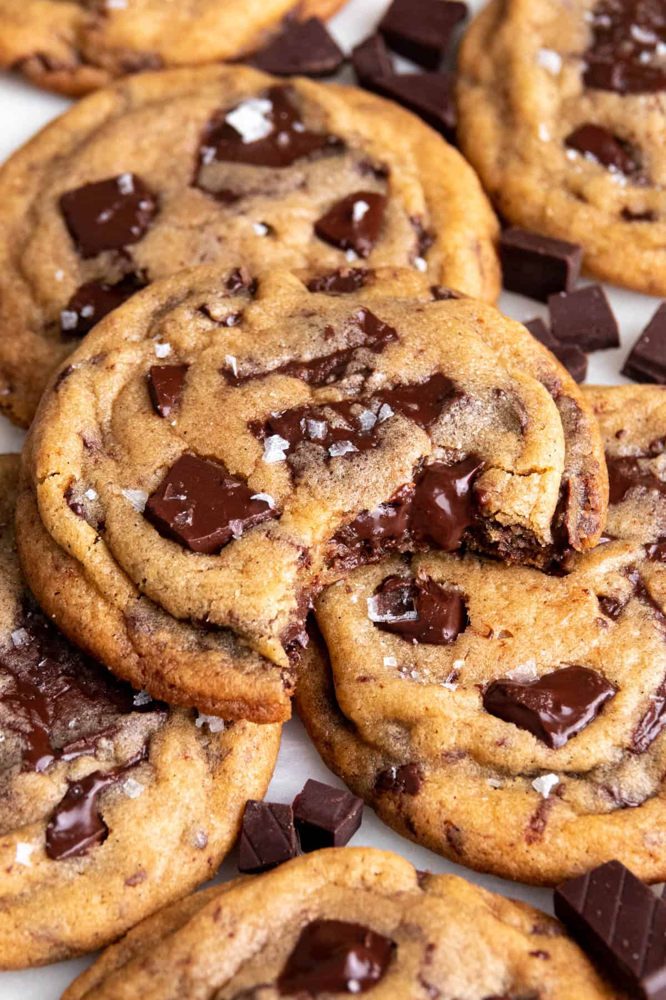
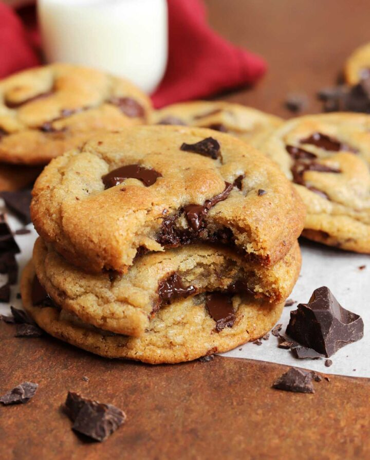
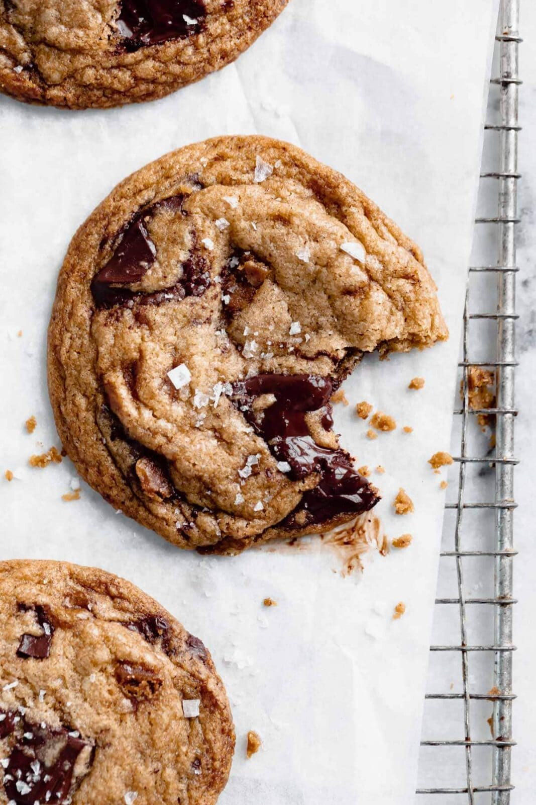

Brown Butter Chocolate Chip Cookies
Recipe Project Research by Lela Hartzman
Recipe
Brown Butter Chocolate Chip Cookies
Ingredients
- 10 tablespoons (140g) salted butter
- 1 1/2 cups (215g) all-purpose flour
- 3/4 teaspoon baking soda
- 1/4 teaspoon salt
- 2/3 cup (145g) packed light brown sugar
- 1/3 cup (65g) granulated sugar
- 1 large egg, at room temperature
- 1 tablespoon (15ml) milk
- 1 teaspoon (5ml) pure vanilla extract
- 3 oz (85g) dark chocolate, chopped into chunks
- 1/2 cup (85g) semisweet chocolate chips
Instructions
-
Brown the butter in a saucepan until brown specks appear and a
golden foam forms on top. Pour the butter into a large mixing bowl
and let it cool for about 10 minutes. Place it in the freezer for
about 10 minutes until it becomes cool and thick, but not hard.
-
Combine the flour, baking soda, and salt in a medium bowl. Whisk
the ingredients together until they are evenly combined.
-
Add the brown sugar and granulated sugar to the cooled brown butter.
Mix gently until the mixture becomes thick and resembles wet sand.
-
Add the egg, milk, and vanilla. Mix until everything is completely
combined and the mixture looks creamy.
-
Add the flour mixture and mix until it is mostly combined. Add the
chocolate chunks and chocolate chips and continue mixing until they
are evenly distributed throughout the dough.
-
Cover the bowl and refrigerate the cookie dough for 1 to 2 hours.
-
Preheat the oven to 375°F and line baking sheets with parchment
paper. Roll the dough into balls and place them about 3 inches apart
on the baking sheets. Do not flatten the dough.
-
Bake for 8 to 10 minutes, until the cookies are golden on top,
browned around the edges, and still soft in the middle. Let them
cool on the baking sheet for 2 minutes before moving them to a wire
rack.
Recipe from
Scientifically Sweet
.
Sample Imagery
These are some images of the cookies that I'd like to use for my website. I like how the cookies look appetizing and how the images are taken from different angles, showing the cookies in different ways.



I like how this website has a checklist that lets you keep track of
each ingredient as you use it. The instructions are clearly separated
and easy to follow, and the notes section below this answers any
questions that someone might have while making the recipe.
I like how this website shows a visual timeline of how long the recipe will
take, which makes it easier to plan before starting. It also has a
checklist for the ingredients and uses bold and colored words to make
the key information stand out.
I like how this website includes pictures that show what different
steps of the recipe should look like. It also allows you to change the
recipe between 1x, 2x, and 3x, which makes it easy to adjust how many
cookies you want to make.
Non-Recipe Website Research
I like how this website uses large type and images to get the viewer's
attention. The contrast between the large headings and small text creates
a clear hierarchy that works well for communicating information quickly.
I like how Apple uses large images, simple type, and empty space which
makes each section feel clear and not too overwhelming. I like how the
site brings your attention to one thing at a time, which I could use
to make the different parts of my recipe feel more organized.
I like how Netflix uses a lot of images with minimal amounts of text, so the
website is easy to look through quickly. I could use a similar idea to show
images throughout my website without distracting from the recipe.